Molab
Molab
Molab stickiness
DAU/WAU & DAU/MAU Stickiness
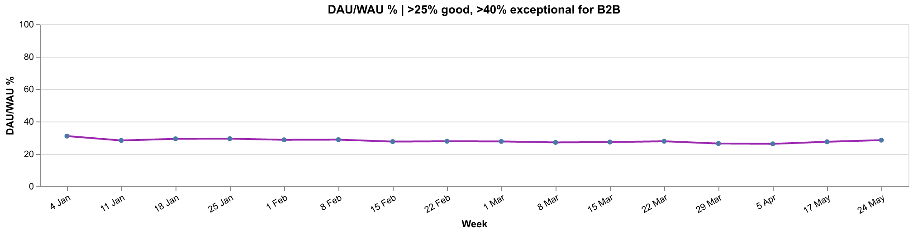
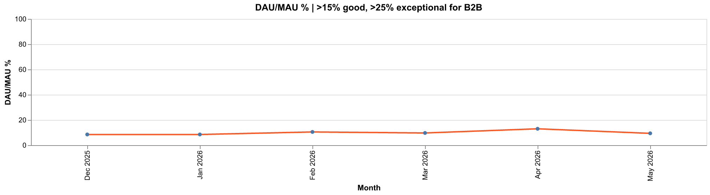
OSS
OSS
Downloads by system
Downloads by System (OS)
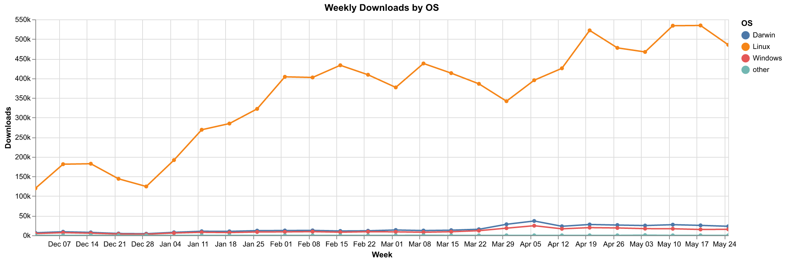
PyPI downloads
PyPI Downloads
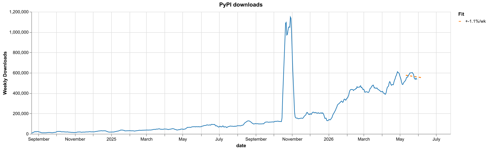
Dependent repositories
Dependent Repositories
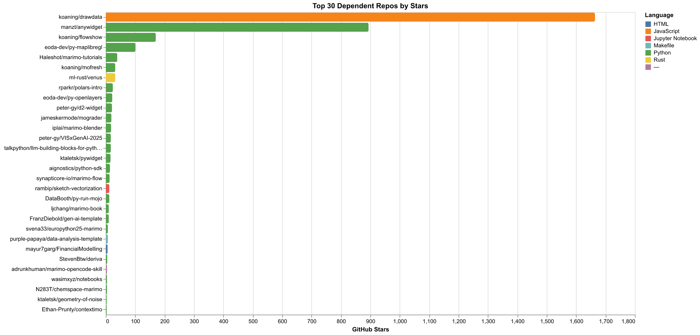
Total GitHub forks
Total GitHub Forks
Claude Skills downloads
Claude Skills Downloads
Skills overview
Skills Overview
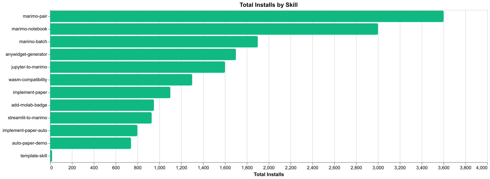
VSCode Extension
VSCode Extension
VSCode overview
VSCode Extension - Overview
New VSCode installs
New VSCode Installs
Rolling 7-day WAU
Rolling 7-Day WAU
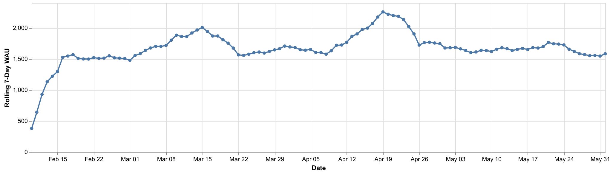
VSCode cohort retention heatmap
Cohort Retention Heatmap
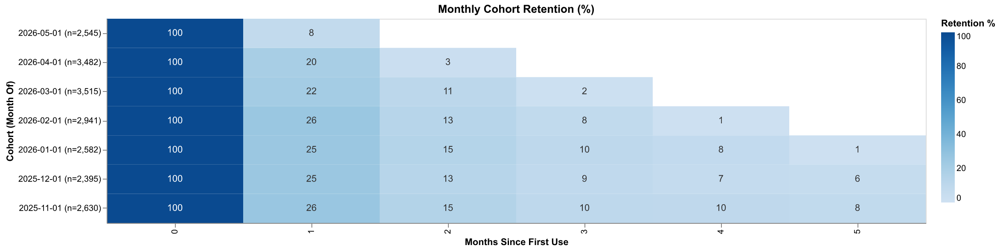
VSCode retention curves
Retention Curves by Cohort
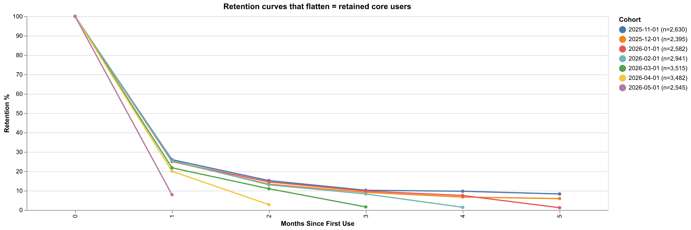
VSCode stickiness
DAU/WAU, WAU/MAU & DAU/MAU Stickiness
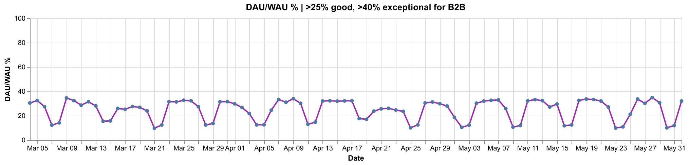
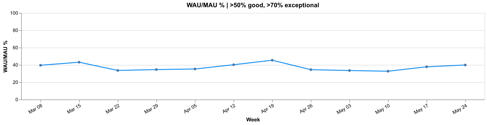
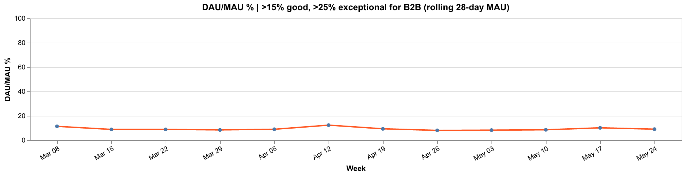
Socials
Socials
YouTube
YouTube
Gallery
Gallery
Gallery clicks
Gallery Clicks
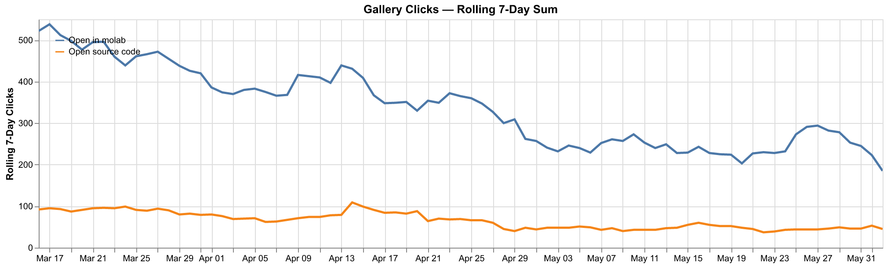
Open in Molab
Open in Molab
Open in Molab overview
Overview (Last 30 Days)
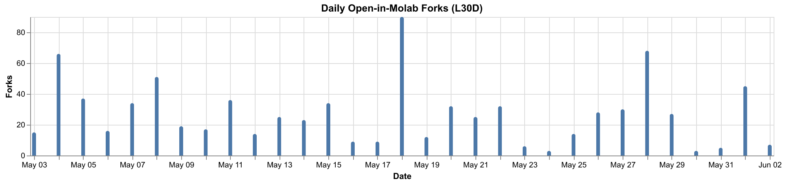
Referrer sources
Referrer Sources
Where users were before clicking 'Open in Molab'.(direct) = typed
URL, bookmark, or referrer stripped.
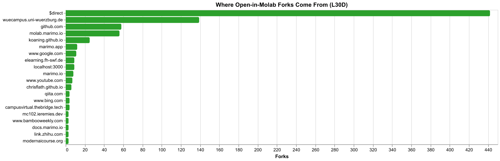
Top forked notebooks
Top Forked Notebooks
Stacked by referrer - shows which notebooks are popular and where their traffic originates.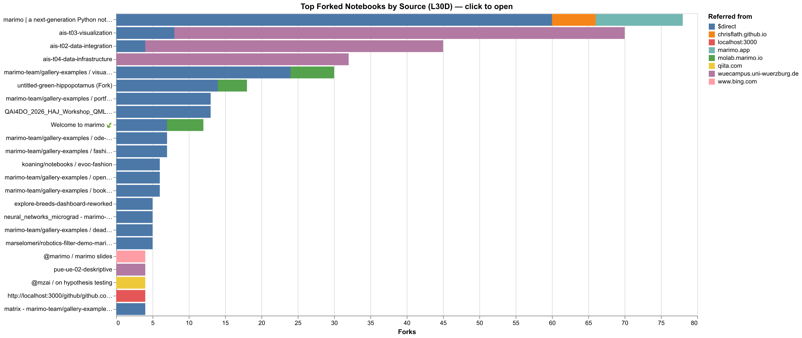
Notebook detail
Notebooks Detail
Most viewed notebooks
Most Viewed Notebooks
Ranked by total page views on molab.marimo.io (L30D), independent of forks.Detail
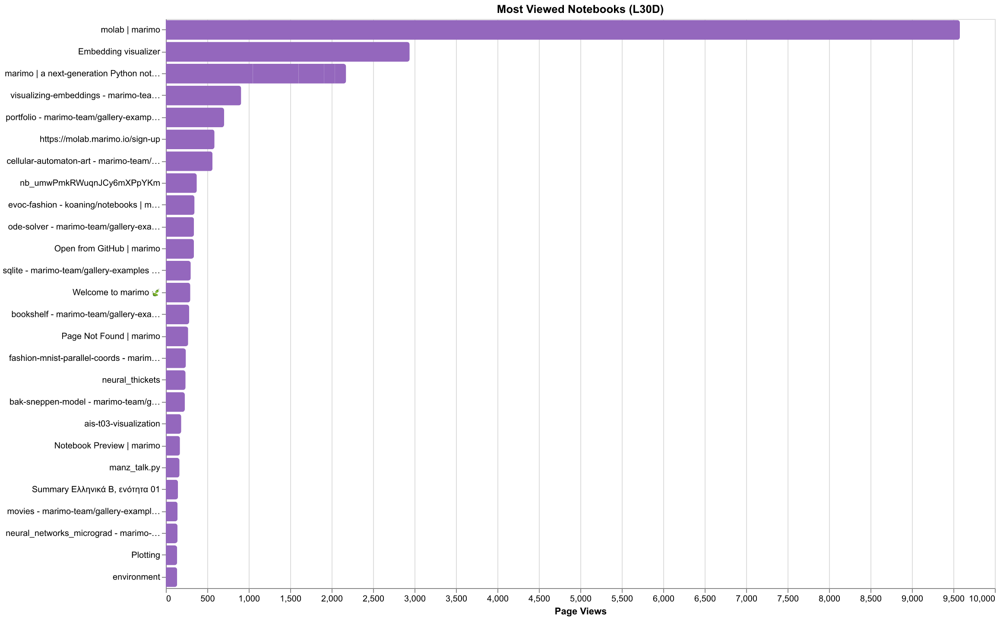
External fork provenance
External Fork Provenance
Forks originating outside marimo-owned domains (excludes marimo.io, molab.marimo.io, docs, direct).Detail
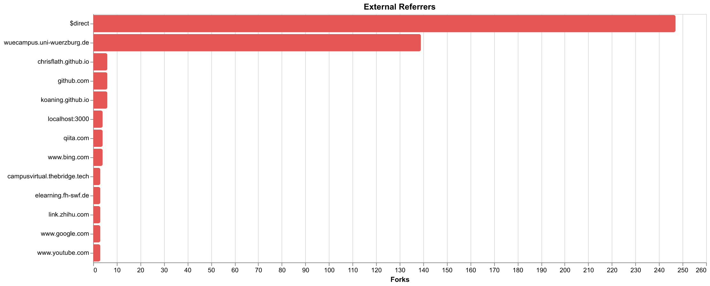
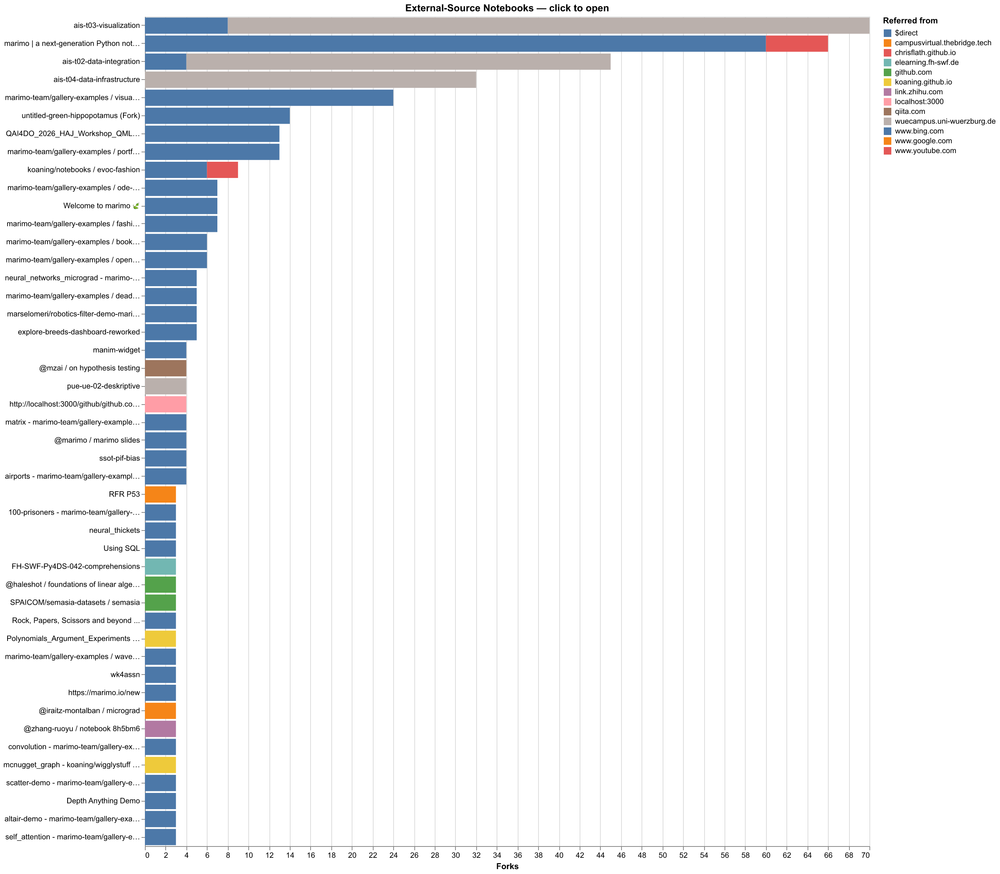